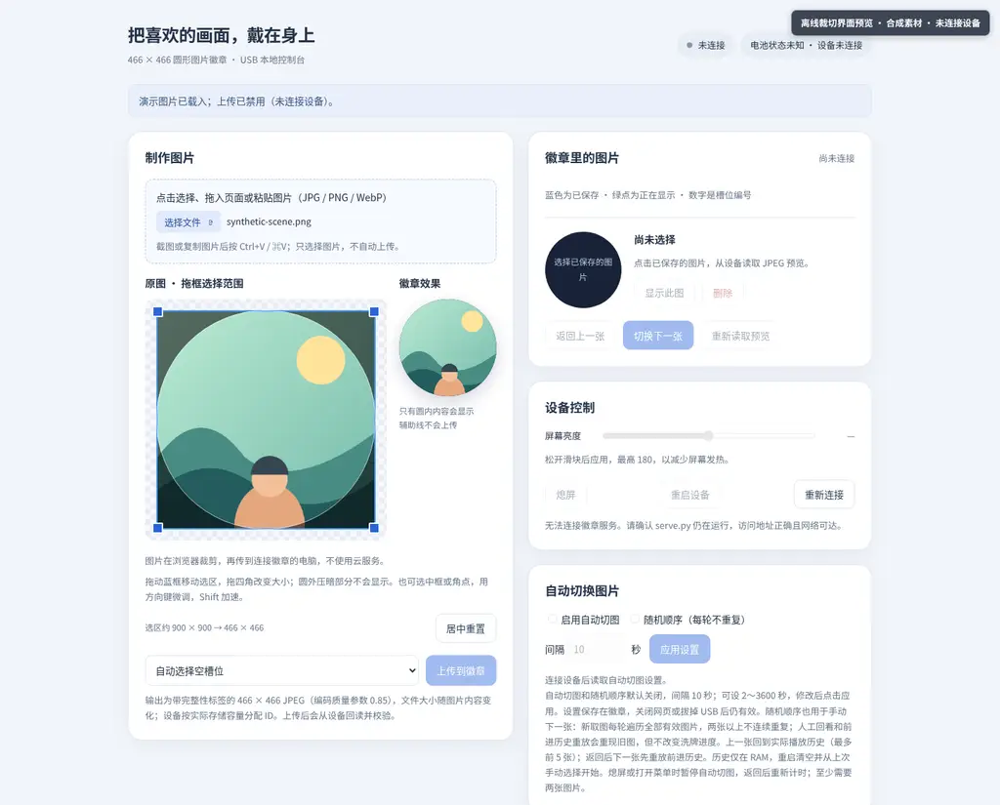
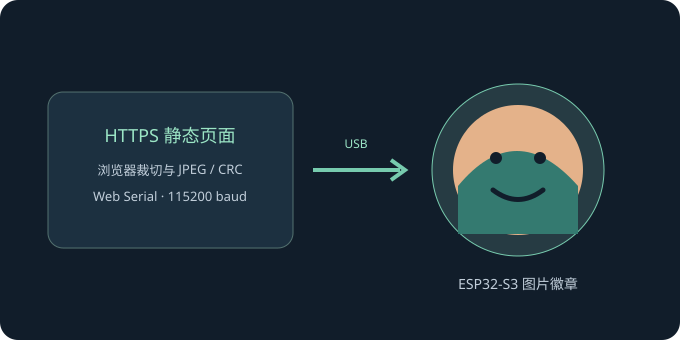

01 挑选与裁切
导入 JPG、PNG 或 WebP，在圆形预览中调整构图。选择图片不会自动上传，明确确认后才传输。
ESP32-S3 · 圆形屏幕 · Web Serial
通过 HTTPS 静态页面在电脑浏览器中裁切、管理图片，并用 Web Serial 直连徽章；无需安装 PWA、本机服务或原生助手。
打开 Web Serial 控制台 →适配 Waveshare ESP32-S3-Touch-AMOLED-1.75C · 桌面 Chromium / Firefox 151+
图片切换支持直接、淡变、水平推入与低成本径向涟漪；涟漪以较硬的扩展边缘换取较低渲染成本。
功能概览
导入 JPG、PNG 或 WebP，在圆形预览中调整构图。选择图片不会自动上传，明确确认后才传输。
管理图片、亮度和动画。USB/VBUS 或未知供电时在线熄屏；电池供电时手动 SLEEP 和电池闲置超时都请求 AXP2101 PMIC 软件关机，不进入 ESP32 深睡。屏幕熄灭时拔掉 USB 转为电池供电也请求 PMIC 关机；关机后按住 POWER 约 2 秒冷启动。
图片传输带有 CRC 校验；网页可读取设备保存的 JPEG 成品，目录使用稳定 ID。
实际控制台 · HTTPS 静态页面
截图来自项目实际控制台；裁切预览中的画面为原创合成素材，截图时未连接徽章。控制台本身可在支持 Web Serial 的桌面 Chromium 或 Firefox 151+ 中使用：点击连接后由浏览器显示串口选择器，页面不会把图片上传到云端。

直接连接
连接数据线后，在支持 Web Serial 的桌面浏览器中打开控制台并点击“连接徽章”。浏览器权限选择必须由用户操作触发，不需要 Python 服务、PWA 或本机助手。
串口权限绑定 origin，而不是项目路径；同一 *.github.io 主机名下的其他仓库页面可能同源并枚举已授权端口。只在信任的站点授权；需要隔离时使用专用自定义子域。

实测与边界
设备用 ESP32-S3 ROM 软件 TJpgDec 解码 JPEG。WebP 输入由浏览器转码，不由设备解码。解码测量含文件读取、CRC 校验及 RGB 转换；会随图片和 I/O 变化，不是性能保证。
睡眠行为依供电方式而异：USB/VBUS（包括充电器）或电源状态未知时，睡眠只关闭显示与 IMU，USB 控制保持在线；电池供电时，手动 SLEEP、USB 熄屏后拔线转为电池供电，及电池闲置超时均在当前操作完成、输入释放和 PMIC 就绪检查通过后请求 AXP2101 PMIC 软件关机，不进入 ESP32 深度睡眠，也不依赖 GPIO3 EXT0 唤醒。PMIC ONLEVEL 设为 2 秒并回读确认；关机后需按住 POWER 约 2 秒冷启动，USB 控制断开且触屏不能唤醒。电池闲置超时默认关闭（0 秒）；设备重启会清空 RAM 播放历史，PMIC 关机不保留轮播中的临时当前图片，但已保存设置仍保留。USB/未知供电熄屏仍保持在线；实际耗电变化尚未实测。
安全地开始
仓库提供可复制的提示词与手动步骤。先逐条审阅命令；已有设备升级仅写应用分区，保留文件系统和设备设置。